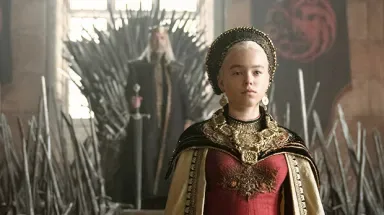
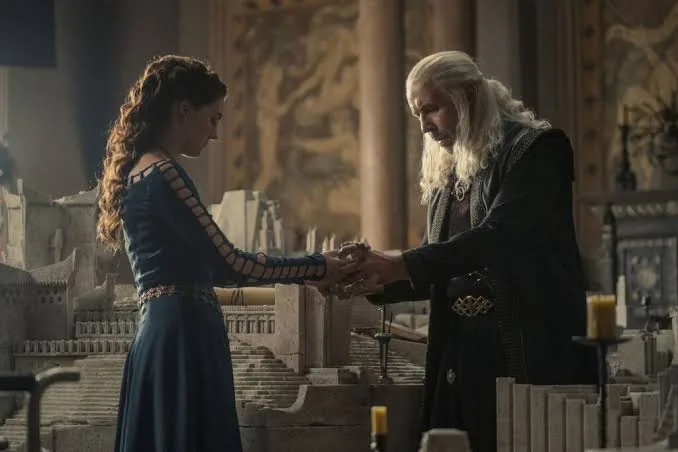
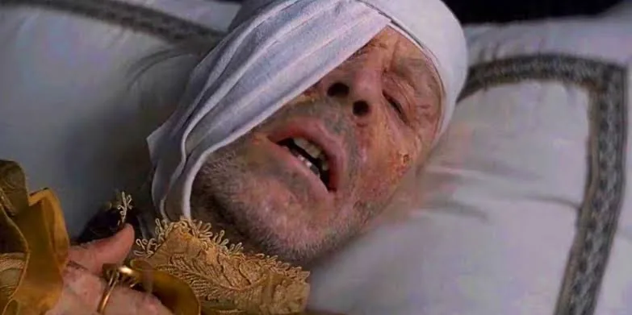
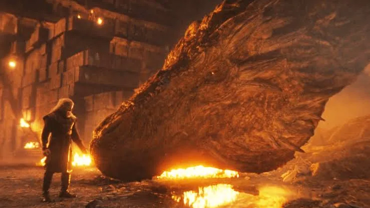
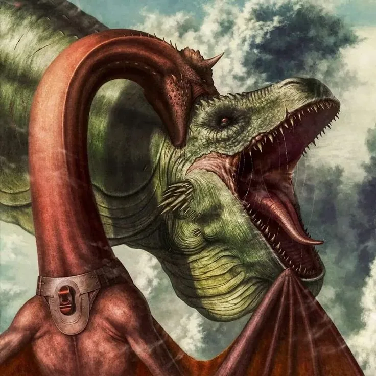
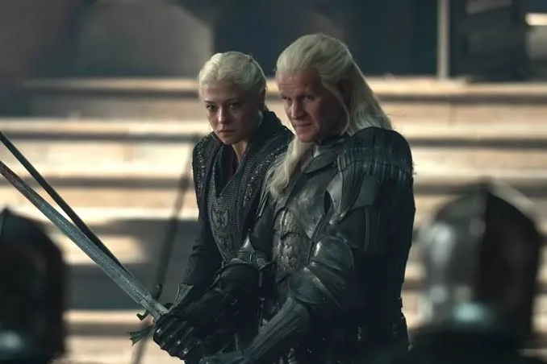
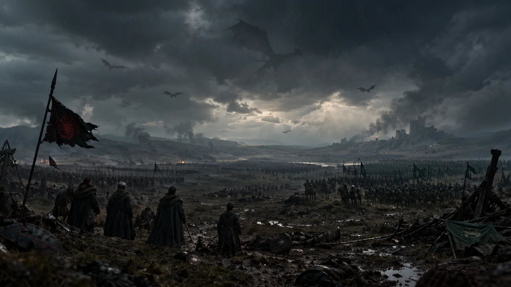
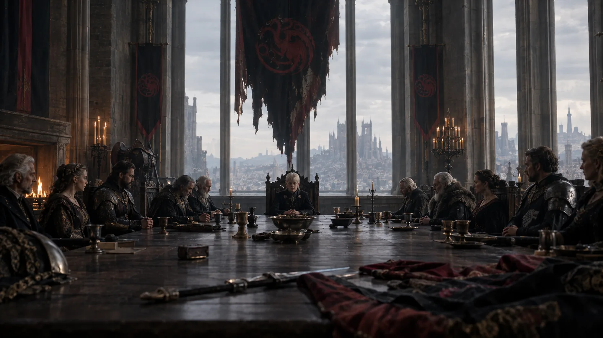

An Heir Is Named
Rhaenyra’s appointment as heir gives Viserys’s reign a clear direction, but it also creates a promise that must survive future changes at court. The storyline follows how that declaration shapes Rhaenyra’s identity, her supporters and the expectations of the realm. Years later, everyone must decide whether the king’s word still controls the succession.
VIEW DETAILS ↗
A Second Marriage, A Second Family
Viserys’s marriage to Alicent creates a second branch of the royal family, and the political consequences grow with every child born from it. A king can love his family without being able to give every member a place in the line of succession. That tension eventually becomes impossible to contain.
VIEW DETAILS ↗
The King Dies
Viserys’s death removes the barrier between the Green and Black factions. The speed with which the Greens act shows that the succession has been planned for years, while Rhaenyra’s absence from the capital gives them an immediate advantage. The story now shifts from family disagreement to a war in which every decision carries irreversible consequences.
VIEW DETAILS ↗
Aegon Is Crowned
Aegon’s coronation creates a direct challenge to Rhaenyra’s inheritance and gives the Greens control of the symbols of royal authority. Once the crown is placed on his head, compromise becomes much harder because both factions can point to a crowned monarch as proof of legitimacy. The ceremony becomes a political weapon as much as a celebration.
VIEW DETAILS ↗
A Prince Falls From the Sky
Lucerys’s death is the emotional point where the conflict between the young members of the two families becomes a blood feud. Aemond’s pursuit and Vhagar’s power produce a death that neither side can easily undo. From here, grief and revenge begin driving the war as strongly as questions of inheritance.
VIEW DETAILS ↗
Dragonseeds and Desperation
The Blacks’ search for new dragonriders shows how quickly the war consumes the advantages that once made the Targaryens powerful. Recruiting dragonseeds expands the number of people who can influence the conflict, but it also introduces uncertainty because dragons cannot simply be treated like ordinary military equipment. The gamble becomes necessary because the old generation is disappearing.
VIEW DETAILS ↗
The Battle Above the God's Eye
Daemon and Aemond carry years of resentment into a confrontation that represents the personal side of the Dance. Their dragons turn a family rivalry into one of the most destructive duels of the war. The tragedy is symmetrical: two powerful Targaryens destroy each other while fighting for a throne neither can truly keep.
VIEW DETAILS ↗
King's Landing Falls
When Rhaenyra takes King’s Landing, the Blacks finally possess the capital they have fought to control. Yet the victory reveals a central weakness of the war: holding the throne does not guarantee obedience. Financial pressure, political opposition and continuing military threats mean that Rhaenyra inherits not a peaceful kingdom but a capital surrounded by enemies.
VIEW DETAILS ↗
The War Turns Again
The Dance repeatedly changes direction as dragons die, armies switch sides and political decisions create unexpected consequences. No victory is permanent. This part of the story emphasizes exhaustion: the factions keep fighting even as the original reasons for the conflict become buried beneath grief, revenge and the need to survive.
VIEW DETAILS ↗
A Council Ends What Dragons Couldn't
The final political settlement demonstrates the limits of military power. After the deaths of so many dragons and members of the royal family, the remaining leaders need a solution that can outlast the battlefield. The council represents a return to negotiation and succession politics, proving that even a dynasty built on dragons ultimately depends on people agreeing to recognize its ruler.
VIEW DETAILS ↗